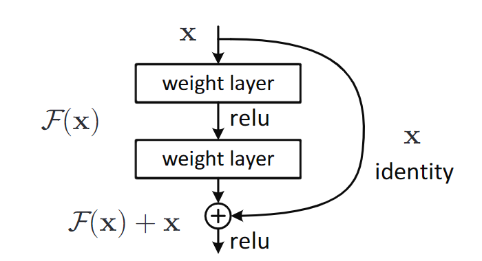
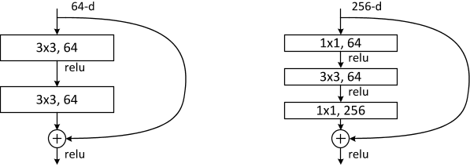
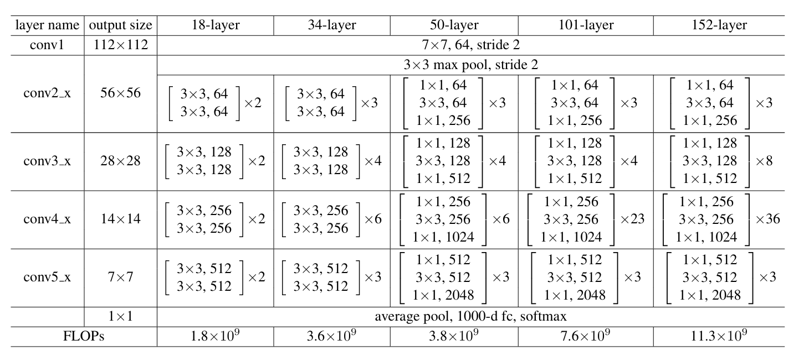
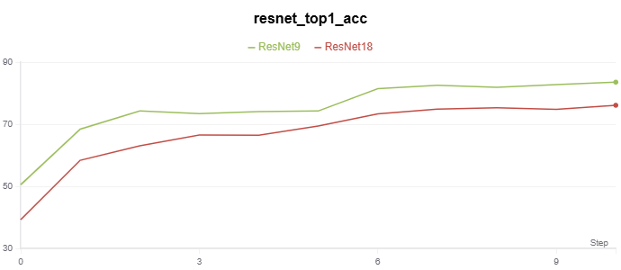
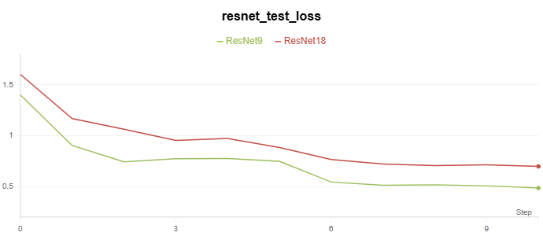

ResNet：残差网络
Deep Residual Learning for Image Recognition
He K , Zhang X , Ren S ,et al.Deep Residual Learning for Image Recognition[J].IEEE, 2016.DOI:10.1109/CVPR.2016.90.
Deeper neural networks are more difficult to train. We present a residual learning framework to ease the training of networks that are substantially deeper than those used previously. We explicitly reformulate the layers as learning residual functions with reference to the layer inputs, instead of learning unreferenced functions. We provide comprehensive empirical evidence showing that these residual networks are easier to optimize, and can gain accuracy from considerably increased depth. On the ImageNet dataset we evaluate residual nets with a depth of up to 152 layers---8x deeper than VGG nets but still having lower complexity. An ensemble of these residual nets achieves 3.57% error on the ImageNet test set. This result won the 1st place on the ILSVRC 2015 classification task. We also present analysis on CIFAR-10 with 100 and 1000 layers. The depth of representations is of central importance for many visual recognition tasks. Solely due to our extremely deep representations, we obtain a 28% relative improvement on the COCO object detection dataset. Deep residual nets are foundations of our submissions to ILSVRC & COCO 2015 competitions, where we also won the 1st places on the tasks of ImageNet detection, ImageNet localization, COCO detection, and COCO segmentation.
摘要：更深的神经网络会更难进行训练。我们提出一个残差学习框架，可以简化比以前使用的网络深度更深的网络的训练。我们明确地将层重新表述为参考层输入的学习残差函数，而不是学习未参考的函数。我们提供了全面的经验证据，表明这些残差网络更容易优化，并且可以从相当大的深度中获得精度。在 ImageNet 数据集上，我们评估了深度高达 152 层的残差网络——比 VGG 网络深 8 倍，但仍然具有较低的复杂性。这些残差网络的集合在 ImageNet测试集上的误差达到 3.57%。该结果在 ILSVRC 2015 分类任务中获得第一名。我们还对 100 层和 1000 层的 CIFAR-10 进行了分析。表征的深度对于许多视觉识别任务至关重要。仅仅由于我们的深度表示，我们在 COCO 对象检测数据集上获得了 28% 的相对改进。深度残差网络是我们提交 ILSVRC 和 COCO 2015 竞赛的基础，我们还在 ImageNet 检测，ImageNet 本地化，COCO 检测和 COCO 分割任务中获得了第一名。
残差块模型
通过引入残差块（Residual Block）和快捷连接（Shortcut Connection），解决了深度神经网络训练中的退化问题（随着深度增加，训练误差不降反升）。
残差块：将网络层的映射目标从 直接学习目标函数 $\mathcal{H}(x)$ 变成 学习残差函数 $\mathcal{F}(x)=\mathcal{H}(x)-x$，最终输出为 $\mathcal{F}(x)+x$。
- 若恒等映射（Identity Mapping）是最优解，则残差函数更容易趋近于零，简化了优化过程。
注：恒等映射是一个输入与输出相同的函数，即 $f(x)=x$。在神经网络中，它表现为直接将输入传递到输出，不做任何变换。
快捷连接：在堆叠层之间添加跨层连接，直接将输入与输出相加，无需额外参数。
- 快捷连接直接将输入 $x$ 加到残差函数 $\mathcal{F}(x)$ 的输出上，相当于强制网络仅学习输入与目标之间的 残差（差异），而非完整的映射。
- 整个网络仍然可以通过反向传播的 SGD 进行端到端训练。

残差网络理论
论文表明：
- 极深残差网络很容易优化，但是当深度增加时，对应的“普通”网络（简单地堆叠层）会表现出更高的训练误差；
- 深度残差网络可以很容易地从显着增加的深度中获得准确度增益，产生的结果比以前的网络要好得多。
与先前工作的关键区别：
- 残差函数 vs 完整映射：ResNet显式学习残差（$\mathcal{F}(x) = \mathcal{H}(x) - x$），而传统网络直接学习 $\mathcal{H}(x) $。
- 无门控 vs 门控：高速公路网络依赖参数化的门控函数，而ResNet通过恒等映射，无需参数，保持信息无损传递。
残差学习
如果假设多个非线性层可以渐近逼近复杂函数 $\mathcal{H}(x)$，则等价于假设这多个非线性层可以渐近逼近残差函数。残差学习将其重新定义为 $\mathcal{F}(x) = \mathcal{H}(x) - x$（假设输入和输出具有相同的维数）。
因此，不需要期望堆叠层来近似 $\mathcal{H}(x)$，而实际学习的是残差函数，最终输出为 $y=\mathcal{F}(x)+x$。
- 若恒等映射 $\mathcal{H}(x)=x$ 是最优解，则残差函数 $\mathcal{F}(x)$ 只需趋近于零，比直接学习完整映射更简单。
- 在实际场景中，恒等映射不太可能是最优的，但我们的重新表达可能有助于解决这个问题。
如果最优函数更接近于恒等映射而不是零映射，求解器应该更容易找到参考恒等映射的扰动，而不是学习函数作为新函数。
快捷连接
输入 $x$ 直接跨过堆叠的层，与残差函数 $\mathcal{F}(x)$ 的输出相加。
- 当输入输出维度相同时，快捷连接直接传递 $x$（无参数）；维度不同时，快捷连接执行线性投影 $W_s$ 以匹配维度：
残差块中，ReLU 激活函数位于残差函数 $\mathcal{F}(x)$ 之后，即：$y=\sigma(\mathcal{F}(x)+x)$，其中 $\sigma$ 表示 ReLU。
并且，残差函数是灵活的，可以包含多个堆叠层，全连接层、卷积层等等。但只有一个层时，并没有优势。
瓶颈结构
为了降低计算复杂度，适用于极深网络（如ResNet-50/101/152）。
组成：1 × 1 卷积（降维）→ 3 × 3 卷积 → 1 × 1 卷积（恢复维度），形成“瓶颈”结构（下图右边）。

网络架构

ResNet-9 适用于轻量级任务，如CIFAR-10。补充 ResNet-9 的大致架构：
| 层级 | 操作 |
|---|---|
| conv1 | 3 × 3 卷积，64 通道，步长为 1 |
| conv2_x | 1 个基础残差块（2 层 3 × 3 卷积， 64 通道） |
| conv3_x | 1 个基础残差块（2 层 3 × 3 卷积， 128 通道，下采样） |
| conv4_x | 1 个基础残差块（2 层 3 × 3 卷积， 256 通道，下采样） |
| 全局平均池化 | 输出尺寸 1 × 1 |
| 全连接层 | 若干个神经元输出 |
大致对比：
| 网络 | 残差块类型 | 阶段块数（conv2_x到conv5_x） |
|---|---|---|
| ResNet-9 | 基础块 | [1,1,1,0] |
| ResNet-18 | 基础块 | [2,2,2,2] |
| ResNet-34 | 基础块 | [3,4,6,3] |
| ResNet-50 | 瓶颈块 | [3,4,6,3] |
| ResNet-101 | 瓶颈块 | [3,4,23,3] |
| ResNet-152 | 瓶颈块 | [3,8,36,3] |
论文实验总结
论文的第四部分 Experiments 通过大量实验验证了残差网络（ResNet）的性能优势，涵盖多个数据集和任务，并深入分析了不同设计选择的影响。
DeepSeek 总结
ImageNet图像分类实验
实验设置：
- 数据集：ImageNet 2012（1.28M 训练图像，50K 验证图像）。
- 网络结构：测试了 18 层、34 层、50 层、101 层、152 层的普通网络（Plain Net）和残差网络（ResNet）。
- 训练细节：SGD 优化器，初始学习率 0.1，分阶段衰减；数据增强包括随机裁剪、水平翻转、颜色扰动；使用批量归一化（BN）但无 Dropout。
关键结果：
- 退化问题验证：34 层普通网络的训练误差高于 18 层普通网络，而 34 层 ResNet 显著优于 18 层 ResNet，证明残差学习解决了退化问题。
- 极深网络表现：ResNet-152 在 ImageNet 上实现单模型 3.57% top-5 错误率（集成模型），赢得 ILSVRC 2015 分类任务冠军。
- 对比 VGG 和 GoogLeNet：ResNet-152 的复杂度（11.3 亿 FLOPs ）低于 VGG-19（19.6 亿 FLOPs），但性能显著更优。
CIFAR-10分析实验
实验目的：验证残差学习在更小数据集上的泛化能力。
网络设计：堆叠简单残差块（每个残差块包含两个3×3卷积层），测试20层到1202层的网络。
关键发现：
- 极深网络的可行性：ResNet-110（170 万参数）达到 6.43% 测试错误率，优于当时的先进方法（如高速公路网络）。
- 1202层网络训练：虽然训练误差趋近于零，但测试误差因过拟合略升至 7.93%，表明需要更强正则化。
快捷连接的消融实验
对比选项：
- 选项 A：维度不匹配时用零填充（无参数）。
- 选项 B：维度不匹配时用 1 × 1 卷积调整（含参数）。
- 选项 C：所有快捷连接均为 1 × 1 卷积（大量参数）。
结论：
- 选项 B 略优于 A：因零填充无法学习残差。
- 选项 C 提升有限：参数过多但收益不高，最终选择选项 B 用于极深网络（如 ResNet-50/101/152）。
目标检测与分割实验
任务与框架：
- 目标检测：基于 Faster R-CNN，将 VGG-16 替换为 ResNet-101。
- 数据集：PASCAL VOC 2007/2012、MS COCO。
关键结果：
- COCO 检测：ResNet-101 相比 VGG-16，mAP@[.5, .95] 提升 6%（相对提升28%），验证了深层特征的泛化能力。
- 竞赛表现：在 ILSVRC 2015 中，ResNet 赢得检测、定位、分割任务冠军。
极深网络的可视化与分析
残差响应分析：
- ResNet的残差函数输出的响应值普遍较小，表明网络更倾向于学习接近恒等映射的微调。
- 网络越深，单个残差块的调整幅度越小，验证了残差学习的“微扰动”假设。
对比其他先进模型
与高速公路网络对比：
- ResNet在超过100层时仍能提升性能，而高速公路网络（Highway Networks）在极深时表现下降。
- ResNet的快捷连接无参数，计算更高效。
代码实现
基于残差网络的 CIFAR-10 分类实验代码在 Github。
实验记录如下：
|  |  |
部分代码如下：
实现简单残差块
class BasicBlock(nn.Module):
"""残差块"""
expansion = 1
def __init__(self, in_channels, out_channels, stride=1, downsample=None):
super(BasicBlock, self).__init__()
# 第一层卷积 → 批量归一化 → ReLU → 第二层卷积 → 批量归一化
self.conv1 = nn.Conv2d(
in_channels, out_channels, kernel_size=3, stride=stride, padding=1, bias=False
)
self.bn1 = nn.BatchNorm2d(out_channels)
self.relu = nn.ReLU(inplace=True)
self.conv2 = nn.Conv2d(
out_channels, out_channels, kernel_size=3, stride=1, padding=1, bias=False
)
self.bn2 = nn.BatchNorm2d(out_channels)
self.downsample = downsample
def forward(self, x):
identity = x # 恒等映射
# 第一层卷积 → 批量归一化 → ReLU → 第二层卷积 → 批量归一化
out = self.conv1(x)
out = self.bn1(out)
out = self.relu(out)
out = self.conv2(out)
out = self.bn2(out)
if self.downsample is not None:
identity = self.downsample(x)
out += identity # 残差连接，F(x) + x
out = self.relu(out) # ReLU
return out
基于残差块构建 ResNet-9
class ResNet9(nn.Module):
"""ResNet9 model"""
def __init__(self, num_classes):
super(ResNet9, self).__init__()
self.in_channels = 64
# 初始卷积层
self.conv1 = nn.Conv2d(3, 64, kernel_size=7, stride=2, padding=3, bias=False)
self.bn1 = nn.BatchNorm2d(64)
self.relu = nn.ReLU(inplace=True)
self.maxpool = nn.MaxPool2d(kernel_size=3, stride=2, padding=1)
# 残差块
self.layer1 = self._make_layer(BasicBlock, 64, 1, stride=1)
self.layer2 = self._make_layer(BasicBlock, 128, 1, stride=2)
self.layer3 = self._make_layer(BasicBlock, 256, 1, stride=2)
# 全局平均池化和全连接层
self.avgpool = nn.AdaptiveAvgPool2d((1, 1))
self.fc = nn.Linear(256 * BasicBlock.expansion, num_classes)
def _make_layer(self, block, out_channels, blocks, stride):
downsample = None
# 检查是否需要下采样：如果步长不为 1 或输入输出通道数不匹配，则创建下采样层。
if stride != 1 or self.in_channels != out_channels * block.expansion:
downsample = nn.Sequential(
nn.Conv2d(
self.in_channels,
out_channels * block.expansion,
kernel_size=1,
stride=stride,
bias=False
),
nn.BatchNorm2d(out_channels * block.expansion),
)
layers = []
layers.append(block(self.in_channels, out_channels, stride, downsample))
self.in_channels = out_channels * block.expansion
for _ in range(1, blocks):
layers.append(block(self.in_channels, out_channels))
return nn.Sequential(*layers)
def forward(self, x):
x = self.conv1(x)
x = self.bn1(x)
x = self.relu(x)
x = self.maxpool(x)
x = self.layer1(x)
x = self.layer2(x)
x = self.layer3(x)
x = self.avgpool(x)
x = torch.flatten(x, 1)
x = self.fc(x)
return x
基于残差块构建 ResNet-9
class ResNet18(nn.Module):
"""ResNet18 model"""
def __init__(self, num_classes=1000):
super(ResNet18, self).__init__()
self.in_channels = 64
# 初始卷积层
self.conv1 = nn.Conv2d(3, 64, kernel_size=7, stride=2, padding=3, bias=False)
self.bn1 = nn.BatchNorm2d(64)
self.relu = nn.ReLU(inplace=True)
self.maxpool = nn.MaxPool2d(kernel_size=3, stride=2, padding=1)
# 残差块
self.layer1 = self._make_layer(BasicBlock, 64, 2, stride=1)
self.layer2 = self._make_layer(BasicBlock, 128, 2, stride=2)
self.layer3 = self._make_layer(BasicBlock, 256, 2, stride=2)
self.layer4 = self._make_layer(BasicBlock, 512, 2, stride=2)
# 全局平均池化和全连接层
self.avgpool = nn.AdaptiveAvgPool2d((1, 1))
self.fc = nn.Linear(512 * BasicBlock.expansion, num_classes)
def _make_layer(self, block, out_channels, blocks, stride):
downsample = None
if stride != 1 or self.in_channels != out_channels * block.expansion:
downsample = nn.Sequential(
nn.Conv2d(
self.in_channels,
out_channels * block.expansion,
kernel_size=1,
stride=stride,
bias=False
),
nn.BatchNorm2d(out_channels * block.expansion),
)
layers = []
layers.append(block(self.in_channels, out_channels, stride, downsample))
self.in_channels = out_channels * block.expansion
for _ in range(1, blocks):
layers.append(block(self.in_channels, out_channels))
return nn.Sequential(*layers)
def forward(self, x):
x = self.conv1(x)
x = self.bn1(x)
x = self.relu(x)
x = self.maxpool(x)
x = self.layer1(x)
x = self.layer2(x)
x = self.layer3(x)
x = self.layer4(x)
x = self.avgpool(x)
x = torch.flatten(x, 1)
x = self.fc(x)
return x